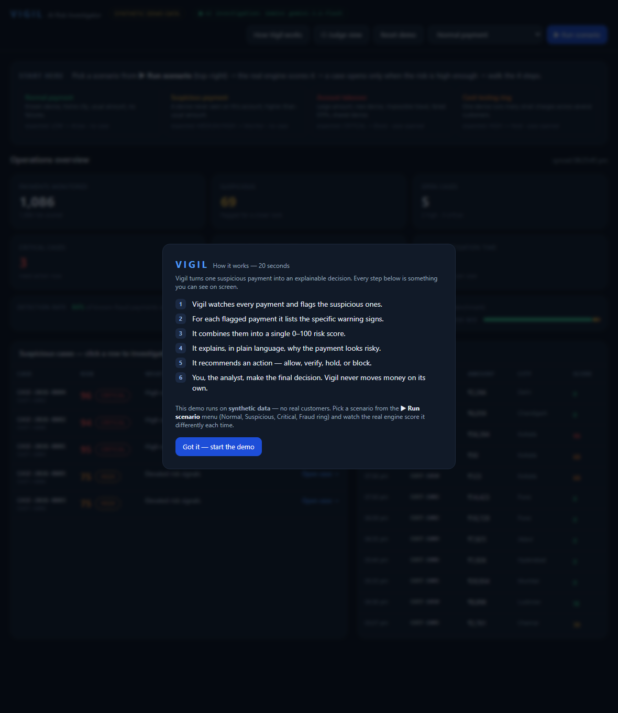
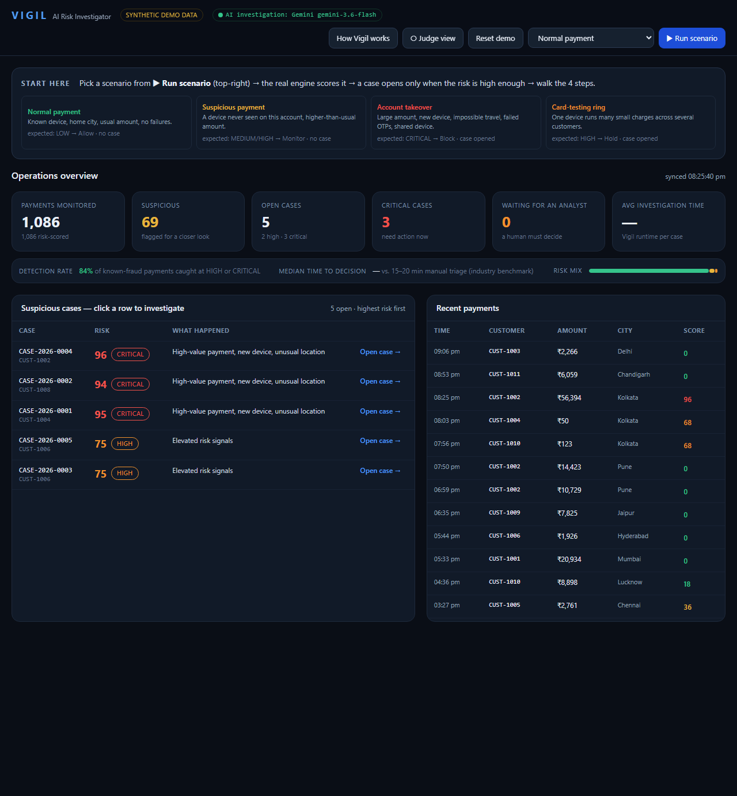
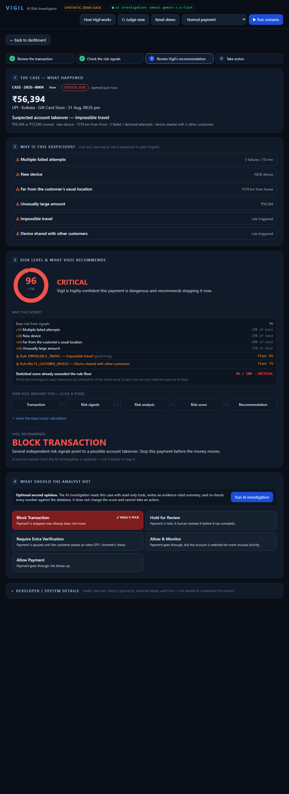
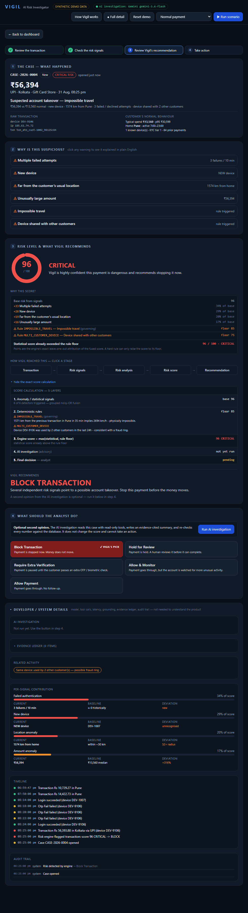
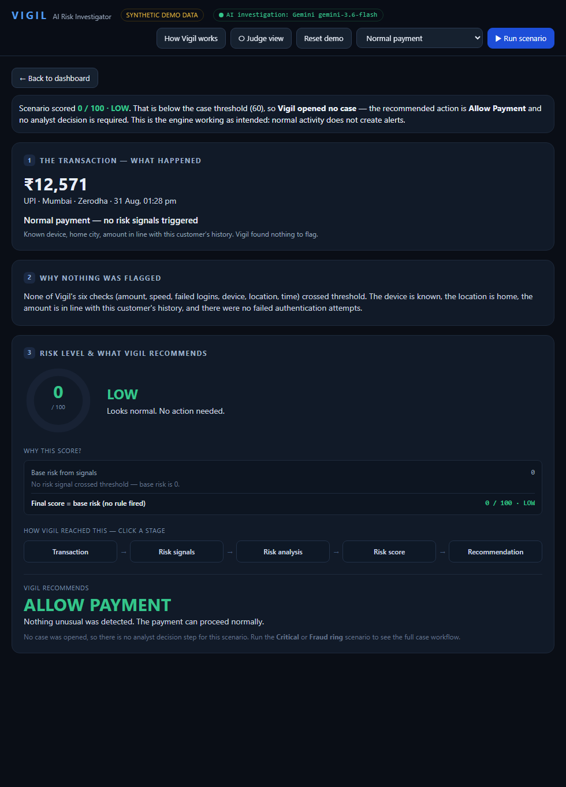
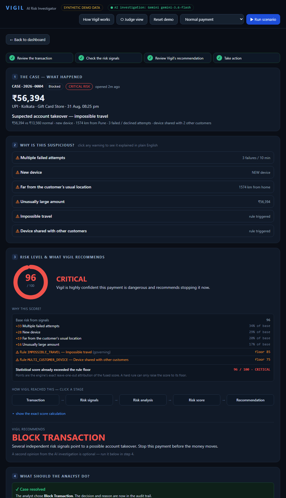
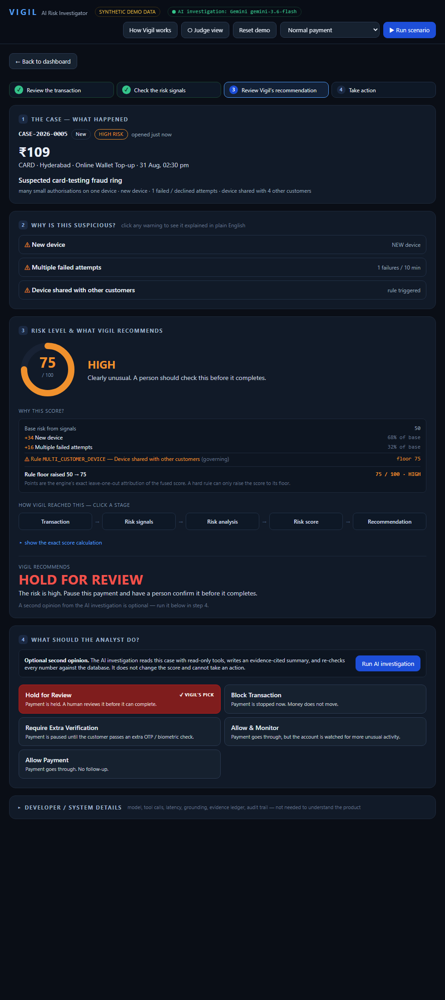

Open this before a demo. It tells you exactly what to click, why, what happens next, what you are looking at, and what to say — using the actual UI labels, routes, and backend logic of the current build. Every number was verified against a running instance.
Generated from the running application. All data is synthetic. No real customer data.
Vigil is a hybrid of three layers with clean boundaries:
| Layer | Owns | Implementation |
|---|---|---|
| Risk engine | the 0–100 score and the recommended action | backend/risk/ — 6 weighted signal detectors → grouped noisy-OR fusion → leave-one-out attribution → 3 rules that impose score floors → a fixed action policy. Deterministic. Hand-set weights. |
| AI investigation | the narrative, findings, and a second opinion | backend/agent/ — Google Gemini gemini-3.6-flash agentic loop over 5 read-only tools, or a deterministic engine-only fallback. Every number it states is re-checked against the database. |
| Human analyst | the decision | backend/services.py — Allow / Monitor / Step-up / Hold / Block, with a mandatory written reason on any override, recorded in an append-only audit trail. |
numpy is used only for median / percentile / MAD. The score is arithmetic over constants.Transaction.status never changes and no money is actually stopped.backend/seed.py.backend/static/index.html — Alpine.js + Tailwind via CDN, no build step, served on the same originGEMINI_API_KEY set) → else Anthropic (if key set) → else deterministic fallbackuvicorn backend.main:app --port 8000 → open http://localhost:8000You never type a transaction. Every transaction on screen is synthetic data the backend
generated and wrote to a SQLite database, then read back through the API. There are three
sources, all in backend/seed.py:
| Source | What it makes | When it runs |
|---|---|---|
seed() | 12 customers CUST-1001..1012 + ~90 days of history each (~1,080 transactions) + 3 scripted historical attacks | on first startup if the DB is empty (backend/main.py), and on every Reset demo |
inject_scenario() | one live scenario built "now" — this is what ▶ Run scenario calls | on POST /api/simulate/scenario |
POST /api/transactions | a generic single-transaction ingest | used by the test suite, not the UI |
The population (which gives each customer a median amount, home city, known devices, active
hours) is deterministic — random.Random(42). The live scenario uses fresh
randomness only for ids and a few numbers within fixed ranges (see Part 12).
(Your earlier screenshot showed ~Rs 90,476 / 97 — same mechanism, larger random amount from an older multiplier. A current run of the same scenario shows the values below.)
No AI is involved in any of the above. Gemini only runs later, if you click "Run AI investigation".
method · city · merchant · time, then a plain-English headline and a one-line summary of the specific facts.decisions row is written, the case status changes (BLOCKED or APPROVED), and an analyst_decision audit entry is appended. The screen shows a green ✓ Case resolved panel and the decision buttons disappear.| Button (exact label) | Where | What it does / after clicking | Changes data? |
|---|---|---|---|
| ▶ Run scenario + the dropdown next to it | Header (top-right) | POST /api/simulate/scenario with the selected scenario. Backend builds the scenario, scores it, saves it, opens a case if score ≥ 60, and the UI routes you to the case (or a transaction-result page). | Yes — inserts transactions / auth events / assessment / (case) |
| The four scenario cards (Normal payment / Suspicious payment / Account takeover / Card-testing ring) | Dashboard "Start here" strip | Shortcut that sets the dropdown and runs that scenario. Same as above. | Yes |
| Reset demo | Header | POST /api/admin/reset → seed() wipes every table and regenerates the deterministic population. Returns to the dashboard. | Yes — wipes + re-seeds the whole DB |
| How Vigil works | Header | Re-opens the 6-point intro card. | No |
| ○ Judge view / ● Full detail | Header | Toggles every technical panel on the case screen (5-layer calc, model / tool-calls / latency, evidence ledger, audit trail) on or off. Stored per-browser. | No |
| Open case → (or click the row) | Dashboard case queue | GET /api/cases/{id} → opens the 4-step case screen. | No |
| ← Back to dashboard | Case / transaction-result screen | Returns to the dashboard and refreshes its metrics. | No |
| A warning row in "Why is this suspicious?" | Case section 2 | Expands / collapses the plain-English explanation for that signal or rule. | No |
| A pipeline stage (Transaction / Risk signals / Risk analysis / Risk score / Recommendation) | Case section 3 | Shows a plain-language explanation of that stage. | No |
| show the exact score calculation | Case section 3 | Expands the 5-layer breakdown (statistical base → rules → engine score → AI → analyst). Same as turning on Full detail. | No |
| Run AI investigation → becomes ✓ Investigation complete | Case section 4 | POST /api/cases/{id}/investigate → Gemini agentic loop (or engine-only fallback). Writes agent_runs + agent_findings + case_evidence; case status → REVIEW_REQUIRED. | Yes — inserts run / findings / evidence rows |
| Block Transaction | Case section 4 | Selects the action. Then a reason box (required only if it differs from Vigil's pick). | Not until "Confirm" |
| Hold for Review | Case section 4 | Selects the action. | Not until "Confirm" |
| Require Extra Verification | Case section 4 | Selects the action. (This is the "step-up" action, STEP_UP_AUTH.) | Not until "Confirm" |
| Allow & Monitor | Case section 4 | Selects the action (MONITOR). | Not until "Confirm" |
| Allow Payment | Case section 4 | Selects the action (ALLOW). | Not until "Confirm" |
| Confirm decision & close case | Case section 4 (after selecting an action) | POST /api/cases/{id}/decision → writes a decisions row, sets cases.status + closed_at, appends an analyst_decision audit row. Shows "✓ Case resolved". A blank reason on an override → HTTP 422. | Yes |
| Cancel | Case section 4 | Clears the selected action / reason box. | No |
| ▸ Developer / system details | Bottom of the case screen | Expander for all technical panels. Same as Full detail. | No |
There is no separate "Investigate", "View details", or "Refresh" button — the dashboard auto-refreshes every 6 seconds, and "investigation" is the "Run AI investigation" button in step 4.






Using the live Account takeover case (CASE-2026-0004):
| Field on screen | Example value | What it means / why it is shown | Source |
|---|---|---|---|
| Case id | CASE-2026-0004 | A case is a suspicious transaction escalated for an analyst. Format CASE-{year}-{n:04d}. | cases table, next_case_id() |
| Status | New → Blocked | Where the case is in its lifecycle. NEW → INVESTIGATING → REVIEW_REQUIRED → BLOCKED / APPROVED. | cases.status |
| Risk band chip | CRITICAL RISK | The score bucket. LOW / MEDIUM / HIGH / CRITICAL. | risk_assessments.band |
| Amount | ₹56,394 | The payment value. Stored as integer paise (5,639,388) and shown in rupees. Compared against this customer's median (₹13,560) — here ≈ 4.2×. | transactions.amount_paise |
| Method | UPI | Rail used (upi / card / netbanking). Card-testing scenarios use "card"; account-takeover uses "upi". | transactions.method |
| City | Kolkata | Where the payment originated. Matters because it is 1,574 km from the customer's home (Pune) — see the impossible-travel rule. | transactions.city / lat / lng |
| Merchant | Gift Card Store | Who is being paid. Gift-card / wallet top-up merchants are common cash-out points for stolen accounts. (MCC 5947.) | transactions.merchant_name / merchant_mcc |
| Time | 31 Aug, 08:25 pm | When it happened. Compared to the customer's active hours (07:00–23:00 here → inside window, so no time signal). | transactions.created_at |
| Plain headline | "Suspected account takeover — impossible travel" | A generated summary based on which rules fired. | computed in the frontend from the assessment |
| Summary line | "₹56,394 vs ₹13,560 normal · new device · 1574 km from Pune · 3 failed/declined attempts · device shared with 2 other customers" | The specific facts, from the triggered signals. | computed from risk_signals + related_events |
| Field | Example | Meaning |
|---|---|---|
| Customer id | CUST-1002 | The account holder. One of 12 synthetic customers. |
| Home city | Pune | Where this customer normally transacts. The baseline for the location signal. |
| Typical spend (median) | ₹13,560 | Middle of this customer's history — the baseline for the amount signal. Computed by numpy.median at seed time. |
| p95 amount | ₹30,599 | 95th percentile of history. If a payment exceeds this on a new device, the new-device signal severity doubles. |
| Active hours | 07:00–23:00 | When this customer is normally active. Baseline for the time-of-day signal. |
| Known devices | ['DEV-1007'] | Devices seen on this account before. Anything else is "new". |
| KYC tier / prior payments | tier 2 / ~N | Context only; KYC tier is passed to the policy but not currently used in its body. |
| Field | Example | Meaning |
|---|---|---|
| device | DEV-9106 | The device id on this payment. Not in the customer's known list → "new device". Also used by 2 other customers → "shared device". |
| ip | 185.66.151.201 | The source IP. Used to link "shared IP" activity in related events. ip_is_proxy is stored (true here) but not currently read by any signal or rule. |
| txn id | txn_ato_cust-1002_… | The transaction primary key. The txn_ato_ prefix marks it as account-takeover scenario output. |
Vigil runs six signal detectors (backend/risk/signals.py). Each compares the
payment to this customer's own history and outputs a severity from 0 to 1. It also has
three deterministic rules (backend/risk/rules.py) that set a minimum score.
| Signal | Meaning | Why it matters | Weight |
|---|---|---|---|
Unusually large amount (AMT_DEV) | The payment is far above this customer's usual amount (robust z-score vs their median). | Account takeovers cash out fast and large. | 0.80 |
Many payments in a short time (VEL_1H) | More payments in the last hour than this customer's normal rate. | Bursts suggest automation or a panic cash-out. | 0.70 |
Multiple failed attempts (AUTH_FAIL) | Failed OTP / password / CVV / decline events in the 10 minutes before the payment succeeded. | Someone was guessing credentials right before this went through. | 0.85 |
New device (DEV_NEW) | The device has never been seen on this account. Severity doubles if the amount is also above p95. | An attacker uses their own device. | 0.60 |
Far from the customer's usual location (GEO_DIST) | The payment is well outside the customer's usual radius. Deliberately weak on its own — it needs corroboration. | Unexpected geography, but people do travel — so it only matters alongside other signals. | 0.50 |
Unusual time of day (TIME_ODD) | The payment is outside the customer's normal active hours. | Off-hours activity is mildly suspicious. | 0.35 |
| Rule | Meaning | Why it matters | Floor |
|---|---|---|---|
Impossible travel (R_IMPOSSIBLE_TRAVEL) | A prior payment ≤ 3 hours earlier is ≥ 300 km away, implying a speed > 900 km/h. | The same person cannot be in both places — the account is compromised. | 85 (hard) |
Device shared with other customers (R_MULTI_CUSTOMER_DEVICE) | The same device was used by ≥ 2 other customers in the last 24 h. | One device paying from many accounts is a fraud-ring pattern. | 75 (hard) |
Burst of failed logins (R_AUTH_STORM) | ≥ 3 failed OTP / password / CVV attempts in the 5 minutes before a successful payment. | Credential-stuffing / OTP brute force that just succeeded. | 65 |
"Hard" rules force the recommended action to Block when the band is CRITICAL. A rule can only raise the score to its floor, never lower it.
The score is a deterministic formula. Gemini does not calculate it, does not touch it, and
the score exists before any AI runs. Source: backend/risk/engine.py::assess().
| Signal | weight | normalized | c = w×n | share of base |
|---|---|---|---|---|
Multiple failed attempts (AUTH_FAIL) | 0.85 | 0.750 | 0.6375 | 34% → +33 |
New device (DEV_NEW) | 0.60 | 1.000 | 0.600 | 29% → +28 |
Far from usual location (GEO_DIST) | 0.50 | 1.000 | 0.500 | 20% → +19 |
Unusually large amount (AMT_DEV) | 0.80 | 0.573 | 0.4584 | 17% → +16 |
Many payments / hour (VEL_1H) | 0.70 | 0 | 0 | 0 |
Unusual time (TIME_ODD) | 0.35 | 0 | 0 | 0 |
So 96 / 100 → CRITICAL → Block. In this run the statistical base (96) is already
above both rule floors, so the rules confirm the score rather than raise it. When the
randomised amount is smaller, the base lands in the 60s–80s and the impossible-travel rule visibly
lifts it to 85. The Card-testing ring case always shows the rule doing the lifting:
base 50 → floor 75 (R_MULTI_CUSTOMER_DEVICE) → 75 / 100 HIGH.
AMT_DEV.normalized
higher so base_score reached 97. Same mechanism, different random draw.| Question | Answer (from the code) |
|---|---|
| Does AI calculate the risk score? | No. The score is engine.py::assess(). Gemini's output schema (backend/agent/schema.py) has no numeric-score field. |
| Does AI detect the suspicious transaction? | No. The deterministic engine scores every transaction and opens the case. Gemini only runs afterwards, on demand. |
| Does AI investigate? | Yes. It reads the case with 5 read-only tools (get_risk_assessment, get_customer_profile, get_transaction_history, get_auth_events, find_related_events). |
| Does AI explain? | Yes. It writes investigation_summary, behavioral_deviation, related_activity, and per-claim findings. |
| Does AI provide a second opinion? | Yes. concurs_with_engine + dissent_reason, and a qualitative agent_risk_view (a word: LOW/MEDIUM/HIGH/CRITICAL — not a number). |
| Does AI recommend an action? | Advisory only. Its recommended_action is shown next to the engine's. The binding recommendation is policy.decide(); the final action is the analyst's. |
| Does AI take any action? | No. It has no tool that writes, blocks, refunds or mutates anything. |
| What happens if AI is unavailable? | runner.investigate() catches any error (429 quota, timeout, parse failure). It drops the partial run, stores the raw error in failure_reason, and runs backend/agent/fallback.py::build() — a deterministic engine-only investigation with the same shape, badged mode = "fallback", model = "engine-only". |
| Every number it states | is re-computed from the database by backend/agent/validator.py (±1% tolerance) and tagged VERIFIED / UNVERIFIED / REFUTED. A "grounding verdict" (PASS / PARTIAL / FAIL) is shown. Failed claims are surfaced with a warning, never dropped. |
generate_content requests per day for gemini-3.6-flash. After heavy
testing that quota was exhausted, so a live "Run AI investigation" returned
429 RESOURCE_EXHAUSTED and Vigil automatically fell back to engine-only mode —
which still produced a verified investigation and even a dissent (engine said Hold, the
fallback's fixed ring rule said Block). For a demo: either the quota resets (~24 h), or
present without the live AI step — it is optional, and the fallback is a fair demonstration of the
same workflow.
Selected in case section 4, then committed with Confirm decision & close case
(POST /api/cases/{id}/decision → services.py::apply_decision()).
| Button | Plain meaning | What happens technically | Resulting case status |
|---|---|---|---|
Block TransactionBLOCK | Stop this payment now. | INSERT decisions row; audit_log "analyst_decision". | BLOCKED + closed_at set |
Hold for ReviewHOLD_FOR_REVIEW | Pause it; a human checks it before it can complete. | Same writes as above. | BLOCKED + closed_at set |
Require Extra VerificationSTEP_UP_AUTH | Make the customer re-verify (extra OTP / biometric) before it goes through. | Same writes. | APPROVED + closed_at set |
Allow & MonitorMONITOR | Let it through, but watch the account for more unusual activity. | Same writes. | APPROVED + closed_at set |
Allow PaymentALLOW | Let it through, no follow-up. | Same writes. | APPROVED + closed_at set |
final_action, the reason, the audit entry — and in the case status (BLOCK / HOLD →
BLOCKED; the other three → APPROVED). But there is no payment gateway:
transactions.status is never changed and nothing is actually blocked or held. "Block
Transaction" records the analyst's decision and closes the case. The engine, the grounded AI
investigation, and the audit trail are the parts that are fully real.
Override rule: if you pick an action that differs from Vigil's recommendation, a written
reason is required — the frontend shows a red note and the backend returns HTTP 422
without one. The reason is stored in decisions.override_reason and in the audit entry.
After a decision: the case screen shows "✓ Case resolved", the decision buttons disappear,
the dashboard metrics update, and POST /api/cases/{id}/investigate now returns
409 for that case.
Keep this beside your laptop. ~12 actions.
http://localhost:8000.The build supports four distinct scenarios, all produced by the real engine — nothing is hard-coded for presentation. Each is a scripted template with a few randomised numbers, so exact figures vary slightly per run but the band and recommendation are stable. Verified live:
| Scenario | How to start | Transaction that appears (live example) | Signals / rules | Score → band → action |
|---|---|---|---|---|
| Normal payment | "Normal payment" card, or dropdown → Run scenario | CUST-1001, ₹12,571, UPI, Mumbai, known device DEV-1000 | none triggered | 0 → LOW → Allow · no case |
| Suspicious payment | "Suspicious payment" card | CUST-1005, ₹2,761, CARD, Chennai, new device DEV-7274 | New device only (100% of a base of 36) | 36 → MEDIUM → Monitor · no case |
| Account takeover | "Account takeover" card | CUST-1002, ₹56,394 (≈4.2× median), UPI, Kolkata, new device DEV-9106, proxy IP | Failed attempts, new device, far location, large amount; rules Impossible travel + Shared device | ~95 → CRITICAL → Block · case opened |
| Card-testing ring | "Card-testing ring" card | CUST-1006, ₹109, CARD, Hyderabad, new device DEV-8111 used across 4 customers | New device + one decline; rule Shared device lifts base 50 → 75 | 75 → HIGH → Hold for review · case opened |

base 50 raised to 75 by the MULTI_CUSTOMER_DEVICE rule. This is the clearest illustration of a rule floor."Fraud analysts get thousands of alerts and have seconds each to decide. Vigil does the investigation for them.
When I run a scenario, the backend generates a synthetic payment and runs it through a deterministic engine — six signals like new device, impossible travel, failed OTPs, unusual amount, each compared to that customer's own history — combined with a noisy-OR model so overlapping evidence isn't double-counted, plus a few hard rules that set a minimum score. That gives a 0–100 number and a band. A fixed policy turns that into a recommended action.
Optionally, Gemini investigates the case with read-only tools and writes a plain-language explanation and a second opinion, with every figure verified against the database. If Gemini is down, a deterministic fallback fills in.
The analyst makes the final call and any override needs a written reason. It's all synthetic data, and it's decision support plus an audit trail — there's no real payment gateway."
[0:00] "I'll run three scenarios through the same engine so you can see it respond differently."
[0:12] (Normal card) "Normal payment — known device, home city, usual amount. Score 0, LOW, Allow. No case. It doesn't cry wolf."
[0:30] (Suspicious card) "Now a device we've never seen. Score jumps to about 36, MEDIUM, Monitor. One signal, no rule, still no case — noted, not escalated."
[0:48] (Account takeover card) "The full attack: far city, new device, failed OTPs, a shared device. Score about 95, CRITICAL. This 'Why this score?' panel is the engine's own breakdown — failed attempts, new device, distance, amount — plus two hard rules, impossible travel and shared device."
[1:15] "Vigil recommends Block. The pipeline shows how it got there. The score is a fixed formula — the AI does not produce it."
[1:30] (optional) "The AI investigation adds an evidence-based opinion when available, and the backend re-verifies every figure it cites."
[1:45] "But the analyst decides. I'll block it, confirm. That decision and reason are now in the audit trail, and the case is resolved."
[2:00] "Suspicious payment in, explainable decision out, human in control."
| # | Question | Answer |
|---|---|---|
| 1 | Where does the transaction come from? | Synthetic data my backend generates. backend/seed.py::_account_takeover() (a scripted template), called from POST /api/simulate/scenario, written to the SQLite transactions table, read back by the API. |
| 2 | Is this real transaction data? | No. 100% synthetic, generated locally by seed.py. No real customer data anywhere. |
| 3 | Is the transaction randomly generated? | Partly. The template is fixed; a handful of numbers are randomised within fixed ranges (amount 3.2–4.2× the median, device id, IP, which 2 ring peers). The 12-customer population is deterministic — random.Random(42). |
| 4 | Is Vigil actually using machine learning? | No. The score is deterministic arithmetic over hand-set weights and rules. No trained model. The only AI is Gemini in the optional investigation step, and it never scores. |
| 5 | How is the risk score calculated? | 6 weighted signals → grouped noisy-OR fusion → base_score; 3 rules impose score floors; score = max(base, floor); band + action from a fixed policy. Deterministic and reproducible. |
| 6 | Why is this transaction ~95/100? | Point at "Why this score?": failed attempts ~34%, new device ~29%, far location ~20%, large amount ~17% of a base of ~96; plus the impossible-travel (85) and shared-device (75) rules. Base already exceeds the floors here, so the rules confirm it. CRITICAL + a hard rule → Block. |
| 7 | What does Gemini do? | Only on "Run AI investigation": reads the case with read-only tools, writes an evidence-cited summary and a second opinion. Every number is re-verified against the DB. It does not score and cannot act. |
| 8 | What happens if Gemini fails / hits quota? | runner.investigate() catches it, stores the raw error, and runs a deterministic engine-only fallback with the same output shape, badged in the UI. The score and recommendation are unaffected (they don't depend on the AI). |
| 9 | Why do you need AI at all? | You don't for the score — that's deterministic. The AI adds a plain-language narrative, cross-account context, and a challenge to the engine (it can dissent), all grounded by re-verification. It speeds up the analyst without being trusted blindly. |
| 10 | What happens when you click Block? | A decisions row is inserted, cases.status → BLOCKED, closed_at set, and an append-only audit_log entry is written. Honest caveat: there is no payment gateway; transactions.status is not changed. |
| 11 | Is the final decision made by AI? | No. The analyst makes it. Any choice differing from the engine's recommendation requires a written reason (enforced — HTTP 422 otherwise). |
| 12 | Can Vigil handle multiple transactions? | Yes — the seed creates ~1,080, all scored; the dashboard shows the queue and a risk-mix distribution. Scoring is per-transaction and fast (single-digit ms). |
| 13 | How would this work in production? | The engine would sit inline on the payment stream; "Block/Hold" would call the real payment/auth service; signals would use production feature stores; the AI step stays asynchronous and advisory. The architecture (engine → optional grounded AI → human + audit) is unchanged. |
| 14 | How would you reduce false positives? | The noisy-OR fusion and the deliberately-weak geo signal already limit them; the Normal scenario scores 0 and opens no case. Next steps: per-segment thresholds, tuned weights from labelled outcomes, and an allow-list for known travel / recurring merchants. |
| 15 | How is this different from traditional fraud rules? | Traditional rules are pass/fail and opaque. Vigil keeps hard rules as floors but adds a transparent statistical score with exact per-signal attribution, plus a grounded AI layer that explains and can challenge the engine — while a human still decides. |
| 16 | Does the score change if I run the same scenario twice? | Slightly — the amount is randomised, so the score moves a few points. The band and recommendation are stable. |
| 17 | What stops the AI from making up numbers? | backend/agent/validator.py recomputes every quantitative claim from the DB (±1%) and tags it VERIFIED / UNVERIFIED / REFUTED; the grounding verdict is shown; failed claims are surfaced, not hidden. |
| Problem | What it means | What to click / do |
|---|---|---|
| Page doesn't load / KPIs stay blank skeletons | The backend isn't running or the browser can't reach it. | Start it: uvicorn backend.main:app --port 8000. Open http://localhost:8000. A red toast "Cannot reach backend" confirms this. |
| Case queue is empty / "No open cases" | No scenario has crossed the case threshold yet (Normal and Suspicious don't). | Run Account takeover or Card-testing ring. If still empty, click Reset demo first. |
| "Run scenario" does nothing / errors | Backend error or the DB isn't seeded. | Click Reset demo (re-seeds), then try again. Check the terminal running uvicorn for a stack trace. |
| "Run AI investigation" spins for minutes | Normal on the live model (~1–3 min). | Wait, or skip it — it's optional. Present sections 1–3 and the decision without it. |
| AI investigation finishes instantly and says "engine-only" / a yellow badge | Gemini was unavailable — usually 429 RESOURCE_EXHAUSTED (free tier = 20 requests/day) or no API key. | Nothing to fix on the spot. Say: "the AI step fell back to Vigil's deterministic mode — the score and workflow are unaffected." Quota resets in ~24 h. |
| Any red error toast (bottom-right) | An API call failed; the text is the backend message. | Retry the action once. If it persists, Reset demo and restart the scenario. |
| Score / signals don't appear on a case | The assessment didn't attach (rare) — usually a stale case from before a reset. | Go ← Back to dashboard, Reset demo, run the scenario fresh. |
| "Confirm decision" button is disabled | You picked an action that differs from Vigil's recommendation and the reason box is empty. | Type a one-line reason. The button enables. |
| "Confirm decision" returns an error | HTTP 422 — override without a reason; or 409 — the case is already resolved. | 422: add a reason. 409: the case is done; go back to the dashboard. |
| Reset demo seems to do nothing | It succeeded silently (it returns to the dashboard). A toast "Demo reset to its starting state" confirms it. | Re-open the dashboard; the queue should show the 3 seeded historical cases. |
| Screenshots in this guide look different | You're on a newer build, or a scenario's random numbers differ. | The structure and labels are current; only exact rupee amounts / a point or two of score vary. |
VIGIL DEMO CHEAT SHEET
http://localhost:8000 → dismiss the intro card.backend/seed.py, stored in SQLite. Not real, not typed by you, not from an API feed.base; rules set a floor; score = max(base, floor). Bands: <35 LOW, 35–61 MEDIUM, 62–81 HIGH, ≥82 CRITICAL. Deterministic — not AI, not ML.decisions + cases.status + audit_log.One-liner: "Suspicious payment in, explainable decision out, human in control."
Vigil — Complete Working Flow Guide. Generated from the running application and its source. All data is synthetic; no real customer data is used anywhere in Vigil.